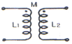
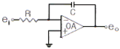
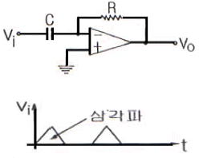
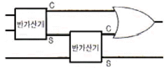
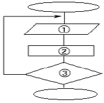
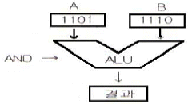
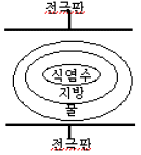

전자기기기능사 (2007-01-28 기출문제)
1과목: 전기전자공학
1. 전류 I, 시간 t 및 전하량 Q 사이의 관계는?(복원 오류로 보기가 없습니다. 보기 내용을 아시는 분께서는 오류신고로 보기 내용 작성 부탁 드립니다. 정답은 1번 입니다.)
- Q=It
- Q= 복원중
- Q= I2
- Q= 복원중
(정답률: 91%)

2. 그림과 같은 상호유도회로에서 결합계수 K는?(복원 오류로 보기가 없습니다. 보기 내용을 아시는 분께서는 오류신고로 보기 내용 작성 부탁 드립니다. 정답은 3번 입니다.)

- 복원중
- M
- 복원중
- 복원중
(정답률: 87%)
3. 정전용량의 역수를 무엇이라고 하는가?
- 리액턴스
- 지멘스
- 엘라스턴스
- 커패시턴스
(정답률: 68%)
4. 1eV는 무엇을 나타내는가?
- 전자가 1m/s의 속도를 얻는데 필요한 전압이다.
- 전자에 1V의 전위차를 가하였을 때 전자에 주어진 에너지이다.
- 전자가 1J의 에너지를 얻는데 필요한 전압이다.
- 전자가 1m의 간격을 옮기는데 필요한 전압이다.
(정답률: 69%)
5. 전원회로에 부하를 연결했을 때 9V, 무부하시 10V 이었다면 전압변동률은 약 몇 %인가?
- 8
- 11
- 15
- 17
(정답률: 74%)
6. 그림과 같은 회로는 무엇이라 하는가?

- 적분기
- 미분기
- 가산기
- 이상기
(정답률: 74%)
7. 이미터 접지회로의 전류 증폭률은 어떻게 정의 되는가?(문제 복원 오류로 정답은 1번 입니다. 정확한 보기 내용을 아시는 분들 께서는 오류 신고를 통하여 보기 내용 작성 부탁 드립니다.)
- (VCE일정)
- (VCB일정)
- (VCB일정)
- (VCE일정)
(정답률: 79%)
8. 변조도 m> 1일 때 과변조(over modulation)전파를 수신하면 어떤 현상이 생기는가?
- 음성파 전력이 작아진다.
- 음성파 전력이 커진다.
- 음성파가 많이 일그러진다.
- 검파기가 과부하 된다.
(정답률: 78%)
9. 피어스(Pierce) BE 수정발진기에 대한 설명으로 가장 옳은 것은?
- 컬렉터 회로의 임피던스가 유도성일 때 가장 안정된 발진을 한다.
- 컬렉터 회로의 임피던스가 용량성일 때 가장 안정된 발진을 한다.
- 컬렉터 회로에 저항 성분만이 존재할 때 가장 안정된 발진을 한다.
- 컬렉터 회로의 임피던스가 저항성 및 용량성이 동시에 존재할 때 가장 안정된 발진을 한다.
(정답률: 50%)
10. 회로에 그림과 같은 입력 파형을 인가하면 출력파형은?

- 삼각파
- 정현파
- 임펄스파
- 구형파
(정답률: 60%)
11. 반송파 전력이 30kW 일 때 변조도 90%로 진폭변조 했을때 피변조파의 전력은 약 몇 kW인가?
- 12
- 21
- 24
- 42
(정답률: 35%)
12. 리플 전압이란 어떤 전압을 말하는가?
- 정류된 직류전압
- 부하시의 전압
- 무부하시의 전압
- 정류된 전압의 교류분
(정답률: 65%)
13. 정현파에서의 파형률은?
- 최대치/실효치
- 실효치/평균치
- 최대치/평균치
- 평균치/최대치
(정답률: 58%)
14. 반도체 정류기에서 1V 순바이어스 전압에 대해 10mA의 전류가 흐르고, 1V역바이어스 전압에 대해 4㎂의 전류가 흘렀다면 정류비는?
- 250
- 350
- 2500
- 3500
(정답률: 56%)
15. 다음 중 출력 임피던스가 가장 적은 회로는?
- 베이스 접지회로
- 컬렉터 접지회로
- 이미터 접지회로
- 캐소드 접지회로
(정답률: 46%)
2과목: 전자계산기일반
16. 펄스폭 ???가 1초, 반복주기 Tr 이 5초이면 반복 주파수는 몇 Hz 인가?
- 0.2
- 0.25
- 1
- 1.5
(정답률: 66%)
17. 리플레시(refresh)가 필요한 메모리는?
- DRAM
- SRAM
- CCD
- PROM
(정답률: 73%)
18. 다음 마이크로프로세서 중 연산 속도가 가장 빠른 것은?
- 4bit 마이크로프로세서
- 8bit 마이크로프로세서
- 16bit 마이크로프로세서
- 32bit 마이크로프로세서
(정답률: 78%)
19. 중앙처리장치를 구성하는 요소를 올바르게 묶은 것은?
- 연산장치, 기억장치
- 기억장치, 입력장치
- 입력장치, 제어장치
- 제어장치, 연산장치
(정답률: 75%)
20. 서브루틴 호출 시 데이터나 주소의 임시 저장이 가능한 것은?
- 스택
- 번지 해독기
- 프로그램 카운터
- 메모리 주소 레지스터
(정답률: 66%)
21. 다음 회로도의 이름으로 옮은 것은?

- 승산기
- 반가산기
- 전가산기
- 뺄셈기
(정답률: 73%)
22. 제어장치의 구성 요소 중에서 다음에 실행 할 명령어가 기억되어 있는 주기억장치의 주소를 갖고 있는 것은?
- Program Counter
- Instruction Register
- Memory Buffer Register
- Memory Address Register
(정답률: 64%)
23. 그림과 같은 흐름도( FLOW CHART)에서 각 번호에 해당하는 기호의 의미는?

- ①시작 ②데이터의 입력 ③조건판단
- ①데이터의 입력 ②조건판단 ③처리
- ①데이터의 입.출력 ②처리 ③조건판단
- ①조건판단 ②처리 ③데이터의 입.출력
(정답률: 66%)
24. 7421 코드 표현에 의한 10진수 9의 값은?
- 0111
- 0101
- 1010
- 1110
(정답률: 65%)
25. 누산기, 가산기, 데이터 레지스터 등과 관계있는 장치는?
- 입력 장치
- 제어 장치
- 연산 장치
- 기억 장치
(정답률: 70%)
26. 다음 그림의 연산 결과를 올바르게 나타낸 것은?

- 1100
- 1101
- 1110
- 1111
(정답률: 80%)
27. 다음 중 C언어에서 사용되는 산술 연산자가 아닌 것은?
- +
- =
- -
- %
(정답률: 65%)
28. 마이크로프로세서에서 사용되는 주소 지정 방식이 아닌 것은?
- 직접주소 지정방식
- 간접주소 지정방식
- 상대주소 지정방식
- 소수주소 지정방식
(정답률: 81%)
29. 스위프 신호발진기 내부회로 구성에 포함되지 않는 것은?
- 진폭 제한기
- 저주파 발진기
- 톱니파 발진기
- 리액턴스 관
(정답률: 43%)
30. 1차 코일의 인덕턴스 6mH, 2차 코일의 인덕턴스 10mH를 직렬로 연결했을 때 합성 인덕턴스는 20mH였다. 이 때 이들 사이의 상호 인덕턴스는 얼마인가?
- 2mH
- 4mH
- 6mH
- 8mH
(정답률: 50%)
3과목: 전자측정
31. 피측정 주파수를 계수형 주파수계로 측정하였더니 1분동안에 반복 회수가 72000회 였다면 피측정 주파수는 몇 Hz인가?
- 300
- 600
- 900
- 1200
(정답률: 87%)
32. 전압이득이 100일 때 이것을 dB로 나타내면?
- 2dB
- 20dB
- 40dB
- 100dB
(정답률: 61%)
33. 가동 철편형 계기의 회전각 와 전류 I의 관계는?(문제 오류로 복원 내용이 정확하지 않습니다. 여기서는 2번을 누르면 정답 처리 됩니다. 정확한 내용을 아시는분께서는 오류신고를 통하여 보기 내용 입력 부탁 드립니다.)
- θ ∝ I
- θ ∝ I2
- θ ∝
- θ ∝
(정답률: 70%)
34. 다음 중 오실로스코프의 음극선관의 주요 부분을 나타낸 것은?
- 전자총, 편향판, 형광판
- 전자총, 편향판, 발진기
- 형광판, 발진기, 전자총
- 형광판, 발진기, 편향판
(정답률: 49%)
35. 피측정 주파수 fx와 가변주파수 발진기의 출력 f0를 비교하여 두 주파수의 차인 △f로 fx를 구하는 고주파 측정계기를 무엇이라 하는가?
- 흡수형 주파수계
- 헤테로다인 주파수계
- 동축 주파수계
- 공동 주파수계
(정답률: 50%)
36. 전류력계형 계기의 특징에 속하지 않는 것은?
- 주로 전력계로 사용된다.
- 직류 전용의 정밀급 계기이다.
- 외부 자기장의 영향 때문에 자기차폐를 해야 한다.
- 자기 가열의 영향이 비교적 크므로 주의가 필요하다.
(정답률: 50%)
37. 다음 중 동축케이블로 전달되는 초단파대의 전력 측정에 사용되는 전력계는?
- 의사 부하법
- C-C형 전력계
- C-M형 전력계
- 볼로미터 전력계
(정답률: 52%)
38. 측정기 자체의 결함이나 온도와 같은 환경의 영향에 의해서 발생하는 오차는?
- 과실 오차
- 우연 오차
- 계통 오차
- 허용 오차
(정답률: 56%)
39. 지시계기는 고정 부분과 가동 부분으로 구성되어 있는데 기능상 지시계기의 3대 요소에 속하지 않는 것은?
- 구동장치
- 가동장치
- 제어장치
- 제동장치
(정답률: 76%)
40. 다음 중 디지털계측의 원리와 관련 없는 것은?
- “0”과 “1”로 나타내는 신호를 쓴다.
- 측정량을 도표상에 연속적인 선으로 나타낸다.
- 이산사상(discrete event)의 계수에 의한 측정이다.
- 눈으로 값을 확인하기 위해 LED표시기를 많이 쓴다.
(정답률: 45%)
41. 다음 중 유전가열이 이용되지 않은 것은?
- 목재의 건조
- 고주파치료기
- 고주파납땜
- 비닐제품 접착
(정답률: 60%)
42. 그림과 같이 복합 유전체를 선택 가열하는 경우 온도가 높은 순서로 맞는 것은? (단, 그림은 3개의 비커를 축이 일치하도록 하여 전극판 사이에 놓고 유전 가열하는 경우로서 주파수는 20㎒로 하며, 식염수는 0.1% NaCl 이다.)

- 식염수 > 지방 >물
- 물 > 식염수 > 지방
- 지방 > 식염수 > 물
- 식염수 > 물 > 지방
(정답률: 78%)
43. 60㎐ 4극 3상 유도전동기의 동기속도는 ?
- 1200rpm
- 1800rpm
- 2400rpm
- 3600rpm
(정답률: 63%)
44. 초음파측심기로 수심을 측정하고자 초음파를 발사 하였다. 이때 물의 길(h)를 계산하는 식은 어떻게 되는가? (단, 물속에서의 초음파속도는 v[m/s], 초음파가 발사된 후 다시 돌아올 때까지의 시간은 t[sec]이다.)(문제 복원 오류로 정답은 1번입니다. 정확한 보기 내용을 아시는 분들께서는 오류 신고를 통하여 보기 내용 작성 부탁 드립니다.)
- h = [m]
- vt[m]
- 2vt[m]
- [m]
(정답률: 68%)
45. 다음 중 서보기구의 구성에 포함 되지 않는 것은?
- 단상전동기
- 리졸버
- 차동변압기
- 싱크로
(정답률: 63%)
4과목: 전자기기 및 음향영상기기
46. 공정제어에서 제어량으로 종류에 속하지 않는 것은?
- 온도
- 장력
- 유량
- 압력
(정답률: 63%)
47. 직류전동기의 속도제어 방법이 아닌 것은?
- 전압제어법
- 주파수제어법
- 계자제어법
- 저항제어법
(정답률: 57%)
48. 프로세스 제어에서 조절계의 제어동작과 관계없는 것은?
- 온.오프동작
- 비례위치 동작
- 비례적분미분동작
- 변환동작
(정답률: 45%)
49. 항공기가 강하할 때 수직면 내에 올바른 코스를 지시하는 것으로 90㎐ 및 150㎐로 변조된 두 전파에 의해 표시되는 착륙 보조 장치는?
- PAR
- 팬마커
- 글라이드패드
- 지상제어 진입장치
(정답률: 72%)
50. 다음 중 바리스터(varister)가 이용되지 않은 것은?
- 온도 보상장치
- 낙뢰로부터 통신기기의 보호
- 회로의 전압조정
- 스파크를 제거함으로써 접점 보호
(정답률: 54%)
51. FM번조에서 변조지수가 6이고 신호주파수가 3㎑일때, 최대 주파수 편이는 몇㎑인가?
- 6
- 9
- 18
- 36
(정답률: 69%)
52. 스트레이트수신기와 비교하여 수퍼헤테로다인 수신기의 장점이 아닌 것은?
- 중간 주파수에서 증폭하므로 증폭도가 높아 감도가 좋다.
- 신호대 잡음비 개선을 위해 진폭제한기를 사용한다.
- 광대역에 걸쳐 선택도의 충실도가 좋다
- 중간주파수로 변화하므로 선택도가 향상된다.
(정답률: 49%)
53. FM수신기에 필요한 요소가 아닌 것은?
- 저주파증폭회로
- 주파수판별회로
- 변조회로
- 주파수혼합회로
(정답률: 60%)
54. 부궤환(NFB)증폭기의 특징에 대해 올바르게 설명한 것은?
- 증폭도는 저주파나 고주파 영역에서 주파수 대역폭이 좁아져 주파수특성이 개선된다.
- 트랜지스터 상수나 전원 전압 등의 변화에 영향을 많이 받는다.
- 내부 잡음을 증가시킬 수 있다.
- 일그러짐(진폭일그러짐, 위상일그러짐)를 감소시킬 수 있다.
(정답률: 57%)
55. 콘트라스트(contrast)에 대한 설명으로 옳은 것은?
- 잡음지수를 말한다.
- 화면의 가장 밝은 부분과 가장 어두운 부분에 대한 밝기의 비를 말한다.
- 음성신호의 이득을 말한다.
- 국부발진기의 주파수 조정정도를 나타낸다.
(정답률: 77%)
56. 비디오신호를 기록 재생하기 위한 조건으로 가장 거리가 먼 것은?
- 비디오 헤드의 모양을 보기 좋게 한다.
- 비디오 헤드의 갭을 좁게 한다.
- 비디오 헤드와 자기테이프의 상대속을 크게 한다.
- 비디오 신호를 변조해서 기록한다.
(정답률: 67%)
57. 다음 중 제너다이오드(zener diode)를 이용한 회로로 가장 적합한 것은?
- 검파회로
- 저주파 증폭회로
- 고주파발진회로
- 정전압회로
(정답률: 69%)
58. 자동음량조절(AVC)회로의 사용목적과 관련이 없는 것은?
- 페이딩(fading)방지를 위하여
- 큰 출력을 얻기 위하여
- 과대한 출력이 나오지 않게 하기 위하여
- 음량을 일정하게 하기 위하여
(정답률: 58%)
59. 자기 녹음기 (tape recorder)에서 고음부의 음량과 명료도가 저하한 증세가 나타났을 경우, 주로 어떤 부분의 조정이 필요한가?
- 헤드높이
- 데이프스피드(모터)
- 헤드 애지머스
- 녹음 바이어스
(정답률: 63%)
60. 전자 빔이 시료를 투과할 때 속도가 다른 여러 전자가 생겨서 상이 흐려지는 현상은?
- 색수차
- 구면수차
- 라디오존데
- 축 비대칭수차
(정답률: 76%)